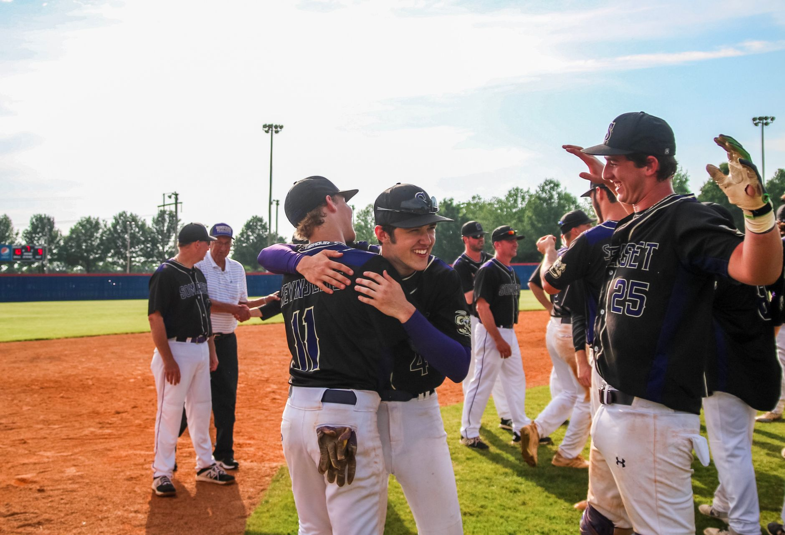

A decisive victory for the Rays
In a high-stakes atmosphere that gripped baseball fans across the country, the Tampa Bay Rays proved why they are considered one of the most resilient teams in the league. Facing a determined Cleveland squad, the Rays managed to control the tempo of the game from the very first inning. Their ability to combine disciplined hitting with airtight defense allowed them to silence the Cleveland crowd and take a significant step toward the championship.
The victory in Game 5 is more than just a single win in a series; it is a massive psychological boost for a team that has faced immense pressure throughout the postseason. By stifling the Cleveland offense, the Rays have effectively put themselves in the driver's seat. The momentum is clearly on their side as they prepare to head back home for the final showdown of the ALCS.
Key moments that defined the game
The game was a tactical battle between two of the best pitching staffs in the American League. While Cleveland attempted to build momentum through aggressive base running and timely contact, the Rays' pitching rotation remained composed. Every time the Guardians threatened to break the game open, the Rays responded with a crucial strikeout or a well-placed ground ball to end the threat.
These specific elements combined to create a game plan that was executed with near perfection. The Rays did not just rely on luck; they relied on a system of play that emphasizes situational awareness and physical execution under extreme pressure.
Cleveland fights back but falls short
It would be a mistake to overlook the effort put forth by the Cleveland Guardians. Throughout the series, they have shown an incredible ability to fight back from deficit situations, and Game 5 was no exception. They managed to put runners on base and forced the Rays' pitchers to work harder than they would have liked, keeping the tension high for every spectator in the stadium.
The intensity in this stadium was unlike anything I have experienced in my career; every pitch felt like it could change the entire course of the season.
However, the lack of timely hitting in the clutch moments proved to be the difference. While Cleveland moved runners into scoring positions, the Rays' defense remained steady, and the pitching staff refused to yield the big hit. This defensive discipline ultimately silenced the Cleveland comeback attempt and solidified the Rays' advantage.
Looking ahead to the World Series
As the Rays prepare to return home, the focus shifts from survival to celebration. The goal is now singular: secure that final win and punch their ticket to the World Series. The team's coaching staff will likely focus on recovery and maintaining the current level of intensity, ensuring that the players do not succumb to the fatigue that often accompanies a long postseason run.
The home-field advantage will play a crucial role in the upcoming games. Having the support of their local fans can provide the extra energy needed to close out the series. For the Rays, the path to greatness is clearly visible, and the entire organization is buzzing with the possibility of a championship trophy.
The resilience of the Tampa Bay roster
The journey to this point has not been easy for Tampa Bay. They have had to overcome various obstacles, including injuries and tough divisional matchups. This recent success is a testament to the depth of their roster and the mental toughness of their veteran leaders. They have proven that they can win both high-scoring shootouts and low-scoring defensive battles.
This ability to adapt is what separates championship contenders from the rest of the pack. Whether they are playing at home or on the road, the Rays have developed a winning culture that thrives on adversity. As they approach the final hurdle of the ALCS, that culture will be their greatest asset.
If you want to catch up on their incredible journey through the playoffs, be sure to read our previous coverage on how the Rays managed to stay alive in the series, including our report on the Rays Win Game 4 to Tie ALCS Against San Francisco Guards. Their ability to bounce back from near-defeat has been the defining characteristic of this entire postseason run.
See Also
If you enjoyed this Baseball News article, check out Rays Win Game 4 to Tie ALCS Against San Francisco Guards for more useful reading.